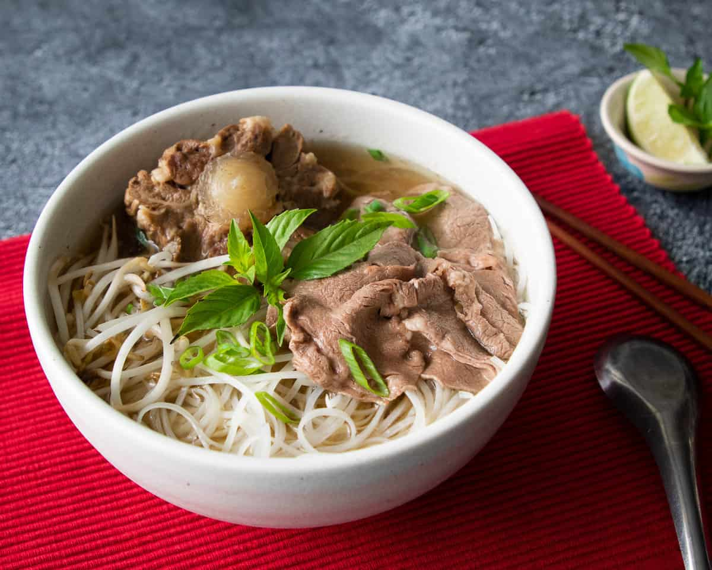

Pho Recipe

Description
Pho is a noodle soup that is arguably the "national dish" of Vietnam; or at least it is the most well known dish from the cuisine. While you can make pho with different kinds of meat, the classic version is made with beef, or phở bò.
Ingredients
Pho Broth Ingredients:
- Beef Bones: joint or marrow bones preferred, as cartilage and marrow make for a rich, full-bodied broth. I get my beef bones from a Korean grocery store; and in general Korean stores have a good supply of beef cuts and bones.
- Stewing Beef: such as brisket or chuck, which will be stewed until tender right in the broth.
- Oxtail: aside from the marrow and connective tissue that results in a delicious broth, oxtail meat is also one of the best cuts for stew. If omitting, use more bones and more stew beef.
- Fresh Ginger
- Onion
- Daikon: I add daikon to all the stocks I make because it makes the soup naturally sweet. It's a must-have veg in Thailand when making any stock or broth!
- Cinnamon Stick
- Green Cardamom
- Star Anise
- Coriander Seeds
- Black Cardamom: these look like oversized green cardamom pods, but the smell couldn't be any more different. It has an aroma reminiscent of leather and smoke. A little goes a long way, and it is beautiful when done right.
- Salt
- Rock Sugar: this is the traditional sugar used, but granulated sugar will work just fine and will not make a difference in this recipe (they are the same sugar compound, just in different forms!)
- Beef Stock Powder a little bit of "fairy dust" that makes this extra special. Aunty Jacqueline swears by Dasida brand which she's been using for over 10 years, but other brands are also okay I'm sure. If you're anti-MSG, you can leave it out and add a little more fish sauce and sugar, but to be honest pho just won't taste like pho without a little MSG magic 😉
- Fish Sauce
Pho Bowl Ingredients:
- Dry Rice Noodles: I use Erawan brand, size small. They need to be rehydrated for 20-30 minutes in room temp water until they turn an opaque white and are fully pliable. Drain after soaking as you don't want to over soak them! Size medium will also work if needed, but they will take up to an hour to soak.
- Bean Sprouts
- Raw Beef Slices This will be added raw to your pho bowl, and it will cook from the heat of the broth. Because the beef needs to be very thin, I recommend buying pre-sliced beef which you can get from Asian supermarkets in the "hot pot" section. If you're going to manually slice, do it when the beef is partially frozen as it'll be easier. Choose any cut of beef that fits your budget here; if it's sliced thin enough it won't be chewy. I used rib eye in my video but sirloin steak also works fine.
- Asian Style Beef Meetballs: (optional): I didn't use this in my bowl, but they're a classic if you like them. Buy them frozen or fresh at Asian supermarkets.
- Lime Wedges: Technically optional but I think a little bit of acidity really makes a difference!
- White or Yellow Onion, Thinly Sliced: Soak the sliced onion in cold water and it'll soften their pungency and make them crisper.
- Fresh Herbs: choose any of the following: green onions, cilantro, Thai basil, sawtooth coriander.
- Hoisin Sauce and/or Sriracha Hot Sauce: I don't think these are traditional and I don't add them, but wanted to mention them, as in N. America they are standard pho condiments. The hoisin sauce is used to dip your meat in, and the sriracha can be used as a dip or can be added to your bowl for a little heat.
Steps
- Wash the bones and meat and place in the stock pot. Cover with 4L of water and bring to a simmer.
- Broil the onion and ginger for about 10 minutes, or until the onions are charred. Slice the broiled ginger into a few pieces.
- Toast the cinnamon stick, star anise, black cardamom, and green cardamom in a dry skillet over medium-high heat until the green cardamom pods brown slightly. Crush the cardamom pods until they break open.
- Reduce the heat to medium and toast the coriander seeds.
- Place all the spices in a soup infusion bag or wrap them in cheesecloth
- Add the salt, sugar and beef stock powder to the broth. Simmer gently (don't let it boil) for 1 hour.
- Skim off the scum and fat once a bunch has collected on the surface.
- Add the onion, ginger, spice bag, and daikon. Simmer for at least 2-2.5 more hours, or however long it takes for the largest piece of meat or oxtail to be fork tender.
- Soak noodles in room temp water for 20-30 minutes until fully pliable (don't over soak). Drain and separate into portions and place each portion into their own serving bowl.
- Once the broth is done, remove the spice bag, ginger, onion, and bones and discard. Pick off any meat or tendon attached to the bones as they're delicious!
- Final seasoning - add all of the fish sauce, then taste and add hot water as needed until it is no longer too salty. If you find that it actually needs more fish sauce, go ahead and add more fish sauce. You can also add more sugar.
- Slice the brisket into thin slices. Cut the daikon into smaller pieces. Leave the oxtail in the broth.
- Blanch the bean sprouts in boiling water for 5 seconds and fish them out with a slotted spoon or skimmer and place on a serving plate.
- Bring the water back to a rolling boil, place a portion of noodles in the noodle strainer and wiggle it in the water for 5 seconds. Place into serving bowl.
- Top the noodles with the raw beef slices. Make sure the broth is boiling and ladle it over the beef until the noodles are submerged.
- Top the noodles with the oxtail and whatever toppings you like and enjoy immediately!